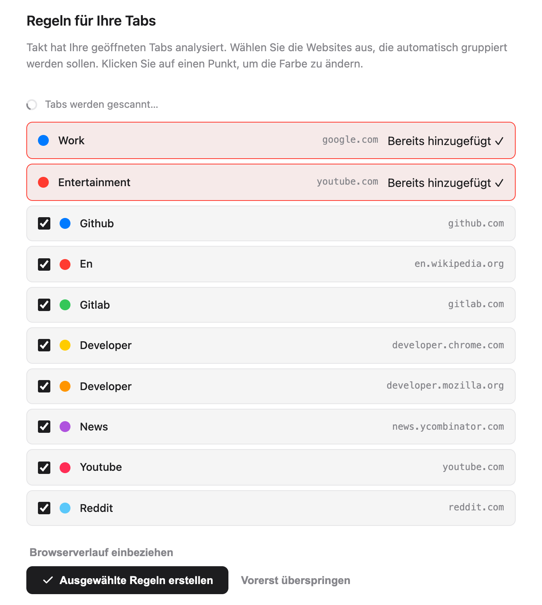
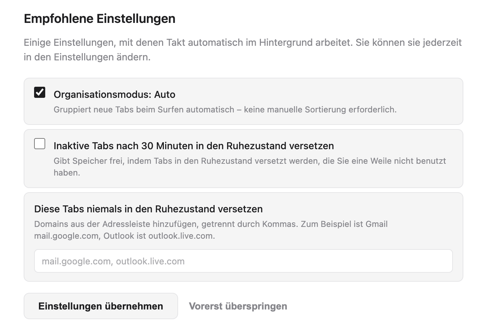
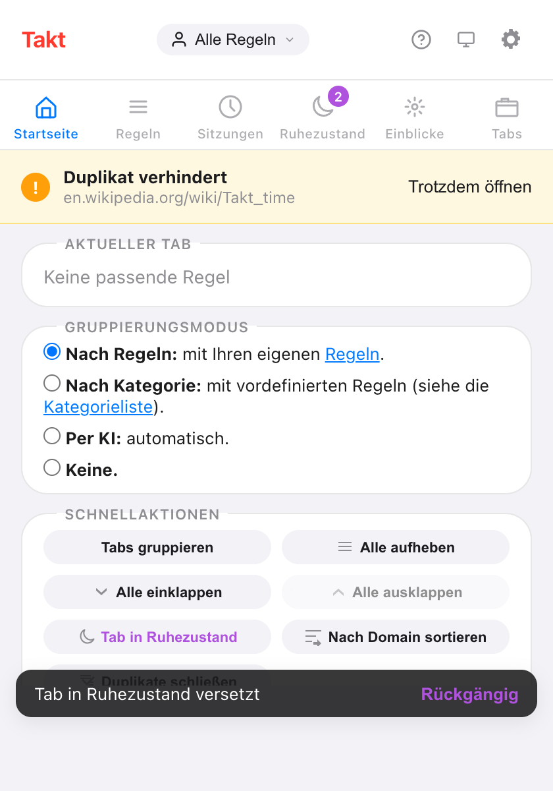
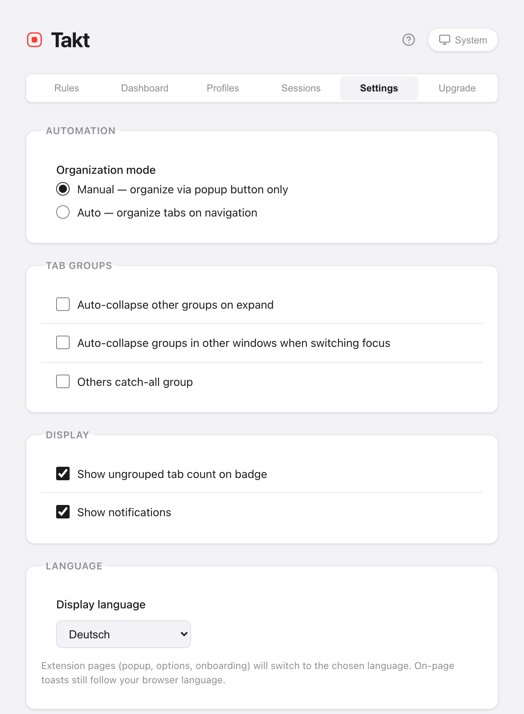

Kurz gesagt: Die Willkommensseite übernimmt die Einrichtung für Sie.
- Sie listet die Websites aus Ihren offenen Tabs auf. Jede angehakte Website wird zu einer Regel.
- Takt gruppiert Ihre Tabs, sobald die Regeln existieren.
- Das Popup enthält die Bedienelemente für den Alltag. Die Optionsseite enthält Regeln, Einstellungen und Pläne.
- Kein Konto. Der kostenlose Plan umfasst 5 Regeln.
Was passiert bei der Installation von Takt?
Installieren Sie Takt aus dem Chrome Web Store. Zwei Dinge passieren:
- Takt legt zwei Startregeln an: Work (google.com, blau) und Entertainment (youtube.com, rot).
- In einem neuen Tab öffnet sich eine Willkommensseite.
Heften Sie Takt über das Puzzle-Symbol (Erweiterungsmenü) in Chrome an, damit das Popup nur einen Klick entfernt ist.
Wie wähle ich meine ersten Regeln?
Die Willkommensseite durchsucht Ihre offenen Tabs und listet die 8 Websites auf, die Sie am häufigsten geöffnet haben. Die beiden Startregeln stehen ganz oben, markiert mit Bereits hinzugefügt.
- Entfernen Sie den Haken bei jeder Website, die nicht gruppiert werden soll. Anfangs sind alle angehakt.
- Klicken Sie auf einen farbigen Punkt, um durch die 8 Gruppenfarben von Chrome zu wechseln.
- Klicken Sie auf Ausgewählte Regeln erstellen.
Takt erstellt die Regeln und gruppiert Ihre offenen Tabs auf einen Schlag. Die Seite meldet das Ergebnis, zum Beispiel „12 Tabs in 4 Gruppen gruppiert“.
Im kostenlosen Plan zählen die beiden Startregeln zur Grenze von 5 Regeln. Es passen also noch 3 hinzu. Takt übernimmt die ersten 3 angehakten Websites und sagt Ihnen, wie viele es ausgelassen hat. Wenn Ihnen wichtig ist, welche 3 es werden, entfernen Sie vorher die übrigen Haken.

Soll Takt meinen Browserverlauf durchsuchen?
Das ist optional. Klicken Sie auf Browserverlauf einbeziehen, und Chrome fragt Sie nach der Berechtigung für den Verlauf. Wenn Sie zustimmen, zählt Takt Ihre Besuche der letzten 7 Tage mit, gewichtet danach, wie oft Sie jede Website besucht haben, und baut die Liste neu auf.
Die Zählung läuft in Ihrem Browser. Nichts wird irgendwohin gesendet. Wenn Sie den Schritt überspringen, stammen die Vorschläge nur aus Ihren offenen Tabs.
Welche empfohlenen Einstellungen sollte ich behalten?
| Einstellung | Auf der Willkommensseite | Was sie tut |
|---|---|---|
| Organisationsmodus: Auto | Angehakt | Neue Tabs werden beim Laden gruppiert. Ohne Haken (Manual) gruppiert Takt nur, wenn Sie auf Tabs gruppieren klicken. |
| Inaktive Tabs nach 30 Minuten in den Ruhezustand versetzen | Nicht angehakt | Hält Tabs an, die 30 Minuten inaktiv waren, um Speicher freizugeben. Sie bleiben in der Tab-Leiste. |
| Diese Tabs niemals in den Ruhezustand versetzen | Leer | Domains, die nie angehalten werden, etwa mail.google.com. |
Klicken Sie auf Einstellungen übernehmen oder Fertig, und Takt speichert die Kästchen genau so, wie sie angehakt sind. Alle drei können Sie später unter Settings ändern.

Zwei weitere Abschnitte können erscheinen. Ist Chromes lokale KI nicht verfügbar, öffnet eine Schaltfläche die KI-Einstellungen von Chrome, und die Seite prüft erneut, wenn Sie zurückkommen. Außerdem stellt die Seite Quick Switch (Alt+Shift+Space) vor, eine Premium-Funktion.
Kann ich die Willkommensseite noch einmal sehen?
Ja. Öffnen Sie die Optionsseite, gehen Sie zu Settings → Support & Feedback und klicken Sie auf Replay welcome tour. Die Seite durchsucht Ihre Tabs erneut, sodass Sie Regeln für Websites anlegen können, die Sie inzwischen nutzen.
Welchen Gruppierungsmodus sollte ich wählen?
Öffnen Sie das Popup. Der Bereich Startseite hat einen Schalter Gruppierungsmodus mit vier Optionen:
| Modus | Wählen Sie ihn, wenn |
|---|---|
| Nach Regeln (Standard) | Sie dieselben Websites jedes Mal in derselben benannten Gruppe haben möchten. |
| Nach Kategorie | Sie keine Regeln schreiben möchten. 20 feste Kategorien, etwa Development und News. |
| Per KI | Sie Gruppen nach Thema möchten. Chromes lokales Modell benennt sie. |
| Keine | Sie Duplikatverhinderung und die anderen Werkzeuge möchten, aber keine Gruppierung. |
Kategorie und KI sind bis zu 5 Gruppen kostenlos. Details unter Tabs nach Kategorie oder per KI gruppieren.
Wie schreibe ich eine eigene Regel?
Klicken Sie im Popup auf das Zahnrad, um die Optionsseite zu öffnen. Klicken Sie unter Rules auf New Rule, fügen Sie eine Bedingung wie URL · Domain · github.com hinzu, benennen Sie die Gruppe, wählen Sie eine Farbe und speichern Sie. Die vollständige Anleitung: Chrome-Tabs automatisch gruppieren.
Wo finde ich was in Takt?
Das Popup ist für den Alltag. Es hat sechs Bereiche:
| Bereich im Popup | Was dort ist |
|---|---|
| Startseite | Die Regel, die auf den aktuellen Tab passt, der Gruppierungsmodus, Schnellaktionen wie Tabs gruppieren und Alle einklappen |
| Regeln | Alle Regeln und ein Link, um sie zu verwalten |
| Sitzungen | Gespeicherte Arbeitsbereiche Premium |
| Ruhezustand | Hibernierte Tabs, bereit zum Aufwecken |
| Einblicke | Regelvorschläge für Websites, die Sie oft nutzen |
| Tabs | Jeder offene Tab, nach Gruppe sortiert, mit Suchfeld |

Die Optionsseite ist für die Einrichtung. Ihre Tabs heißen Rules, Dashboard (Speicher pro Tab und Gruppe, Premium), Profiles (Premium), Sessions (Premium), Settings und Upgrade.
Wie ändere ich Sprache oder Design von Takt?
Sprache. Gehen Sie zu Settings → Language → Display language. Wählen Sie English, Français, Español, Italiano, Deutsch oder Português, oder Use browser default. Ihre Wahl ist unabhängig von der Sprache von Chrome. Popup, Optionsseite und Willkommensseite wechseln die Sprache; die Seite lädt dafür neu. Kleine Hinweise, die Takt innerhalb von Webseiten anzeigt, folgen weiter der Sprache von Chrome.
Design. Klicken Sie auf die Design-Schaltfläche in der Kopfzeile des Popups oder der Optionsseite. Sie wechselt zwischen System, Hell und Dunkel. System folgt Ihrem Betriebssystem. Beide Einstellungen werden mit Ihren übrigen Einstellungen gespeichert.

Was die Einrichtung nicht abdeckt
- Vorschläge gelten pro Website. Die Willkommensseite legt eine Domain-Regel pro Website an. Für Muster wie „alle Pull Requests“ schreiben Sie Glob- oder Regex-Regeln selbst (Premium).
- Unbekannte Websites bleiben im Regelmodus ungruppiert. Legen Sie eine Regel an oder wechseln Sie zu Kategorie oder KI.
- Der kostenlose Plan endet bei 5 Regeln. Siehe was Free und Premium enthalten.
Zwei Minuten von der Installation bis zu gruppierten Tabs.
Zu Chrome hinzufügen — kostenlosHäufige Fragen
Ist Takt kostenlos?
Ja. Der kostenlose Plan umfasst 5 Regeln, Gruppierung nach Kategorie und per KI mit bis zu 5 Gruppen, Duplikatverhinderung, automatisches Anhalten und die Schnellaktionen im Popup. Premium kostet $3/Monat oder $30/Jahr.
Brauche ich ein Konto, um Takt zu nutzen?
Nein. Takt hat kein Konto. Ihre Regeln und Einstellungen werden in Chrome gespeichert. Siehe was Takt mit Ihren Daten macht.
Wie öffne ich die Willkommensseite erneut?
Optionsseite → Settings → Support & Feedback → Replay welcome tour.
Kann Takt eine andere Sprache als Chrome verwenden?
Ja. Wählen Sie unter Settings → Language eine von 6 Sprachen. Popup, Optionsseite und Willkommensseite wechseln die Sprache; Hinweise innerhalb von Webseiten folgen weiter der Sprache von Chrome.